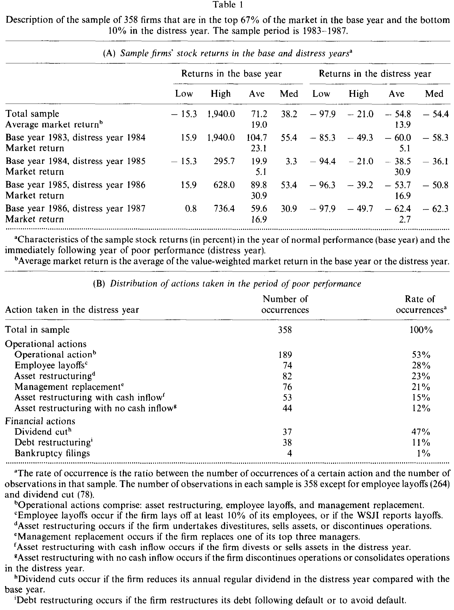
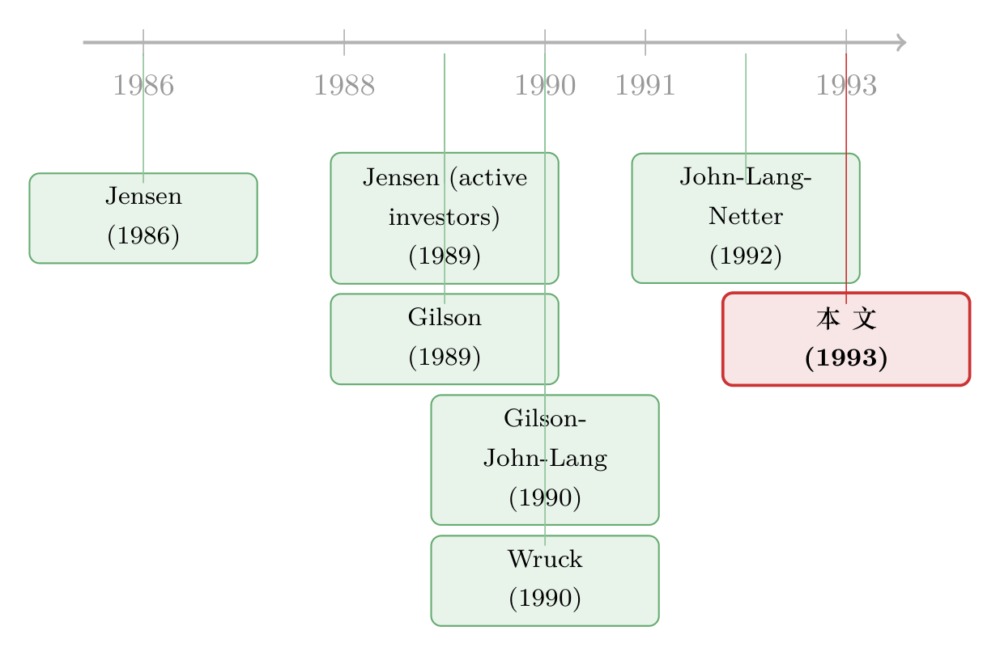

杠杆，是逼公司「快点动手」的那根鞭子
本文读的是 Ofek (1993, Journal of Financial Economics)：在 358 家「前一年表现尚可、后一年股价跌进全市场最差 10%」的公司里，困境之前的杠杆越高，公司在坏年份里采取「卖资产、裁员、砍股利」这类操作性行动的概率就越高、动作也越快——这正是 Jensen (1989) 那句「高杠杆会逼公司提前反应」的第一份短窗口证据。有意思的是，管理层持股越多，反而越不愿意动手。
1 引言：同样跌进谷底，为什么有的公司「立刻动手」，有的却「按兵不动」？
一家公司业绩突然变坏，它会怎么做？
教科书会告诉你一长串答案：换掉高管 [Gilson (1989)]、调整组织结构 [Wruck (1990)]、重组债务甚至申请破产 [Gilson, John, and Lang (1990)]。常见的短期应对，无非是卖掉资产、裁掉员工、换掉管理层 [John, Lang, and Netter (1992)]。可问题在于——为什么有的公司选这一套，有的公司选那一套，还有的公司干脆什么都不做？ 这件事，在 1993 年之前几乎无人系统地回答过。
而它远不只是个学术好奇心的问题。如果我们能搞清楚「是什么在加快一家公司对坏消息的反应速度」，那就等于找到了一把钥匙：让陷入麻烦的公司更早地止损、调整、自救，从而把它的持续经营价值（going-concern value）保住，而不是任由它一路烂下去、最后只能贱卖清算。
那么，到底是什么决定了这个反应速度？
Jensen (1989) 给了一个相当大胆的答案：杠杆。他的逻辑是这样的——高杠杆的公司，价值只要稍微下滑一点，就可能触发违约；而违约像一记警钟，会立刻把债权人、管理层、股东全都惊动起来，逼着公司赶紧重组经营、重组债务，把还能救的价值救回来。反过来，一家初始杠杆很低的公司，得等到连续亏损、价值跌得远远低于困境前的水平，才会真正违约；在那之前，它对短期的经营恶化往往无动于衷，于是白白流失了更多的持续经营价值。
一句话：在 Jensen 眼里，债不是包袱，而是一根鞭子——它逼着公司在坏消息刚冒头时就动手。（关于「债是用来逼老板的」这条主线，可参见《债，是用来「逼」老板的——可如果有人替你盯着，还需要逼吗？》。）
这篇论文要做的，就是把 Jensen 这句话第一次拖到数据面前，认认真真地检验一遍。
2 理论预测：杠杆到底「逼」出了哪些动作？
在动手之前，先把理论的预测理清楚。这一行的模型大致分成两派，它们对「高杠杆会逼出什么样的动作」给出了细微但重要的不同预测。
第一派是「自由现金流」逻辑 [Jensen (1986)、Stulz (1990)]：债务的还本付息义务会逼着表现不佳的公司去变现——卖资产、剥离业务，把现金挤出来还债。所以这一派预测：杠杆与那些产生现金流的行动正相关。（Jensen 这套自由现金流的故事，我此前专门写过，见《现金为什么一定要「还」出去？——四十年后，重读 Jensen 的自由现金流》。）
第二派是「违约监督」逻辑 [Harris and Raviv (1990)、Ofek (1991)]：一旦违约，债权人会接管监督权，逼公司去做任何能增加企业价值的动作——哪怕这个动作不带来短期现金流。比如停掉一条赔钱的业务线、合并几家工厂、换掉无能的管理层。
注意这两派的分歧点：它们都预测「杠杆 → 更多操作性行动」，但对「行动是否产生现金」的预测不同。这就给了 Ofek 一个绝妙的检验切口——他把操作性行动进一步切成两类：
- 带来现金流入的资产重组（divest、卖资产）；
- 不带来现金流入的资产重组（停业、合并工厂）。
如果只有前者被杠杆推高，那是自由现金流逻辑占上风；如果两者都被推高，那违约监督逻辑也在起作用。
至于财务性行动，预测则简单得多。债务重组和破产，几乎是「按定义」与杠杆正相关的——只有还不起（或不愿还）债的公司，才需要重组或破产。但 Jensen (1989) 在这里又补了一刀有意思的预测：高杠杆的公司，更倾向于用债务重组来替代昂贵的破产，尤其当持续经营价值远高于清算价值时。换句话说，破产更可能发生在那些「因为长期连续亏损、价值一路跌到接近清算线」才变得高杠杆的公司身上。于是 Jensen 的逻辑暗含一个可检验的推论：在一个「只困了短短一年」的样本里，破产的比例应该很低，债务重组的比例应该相对更高。 记住这一点，它待会儿会变成全文最漂亮的一处反差。
最后是股利。陷入困境的公司更可能砍掉股利来保住内部资金；再加上债务契约本身常常限制股利支付 [Smith and Warner (1979)]。DeAngelo and DeAngelo (1990) 已经发现，长期困境的公司里有 67% 在困境第一年就砍了股利。Ofek 想把这条线往前推一步：困境之前的债务水平，是否也影响砍股利的决定？
3 识别策略：一个被「短窗口」精心隔离出来的实验
这是全文最值得琢磨的一步，也是它最聪明的地方。
先说清楚：这不是一个双重差分或工具变量那样的「干净因果」设计。它的核心是一组截面 probit 回归——把「公司是否采取了某项行动」这个 0/1 变量，回归到困境前一年的杠杆，再加上一堆控制变量（管理层持股、外部大股东、公司规模、流动性、盈利能力的变化等）。
那它凭什么能识别出「杠杆 → 反应」这条因果，而不是反过来？
关键就在「只取一年坏表现」这个样本设计上。 想想看，如果你像 Gilson, John, and Lang (1990) 那样去研究「连续困了三年以上」的公司，你会遇到一个致命的内生性：这些公司的高杠杆，很可能本身就是连年亏损、股价腰斩「事后」造成的结果——债没变，但市值塌了，杠杆自然就飙上去了。这时候你再说「杠杆导致了反应」，因果方向根本说不清。
Ofek 的破解办法，是把研究对象锁定在「前一年还好端端、后一年突然跌进谷底」的公司上：
- 基准年（base year）：股票收益排在全市场前 67%；
- 困境年（distress year）：紧接着的下一年，收益跌进全市场最差的 10%。
这样一来，他用来解释行动的那个杠杆，是困境发生之前、公司还表现良好时的杠杆——它先于坏消息存在，因此不可能是坏消息「造成」的。更妙的是，「只困一年」这个窗口本身就把「反应速度」这件事给隔离了出来：你看到的任何行动，都是公司对短期冲击的即时反应，而不是被长期困境拖到墙角后的无奈之举。
这就是这篇 1993 年论文方法论上的精髓：它没有花哨的计量工具，但靠一个极其克制的样本定义，把「杠杆是因还是果」这个老大难问题，硬生生从源头上掐断了。
至于杠杆本身的定义，全文用的是市值口径：
$$ \text{Leverage} = \frac{D_{\text{book}}}{D_{\text{book}} + E_{\text{market}}} $$
其中 \(D_{\text{book}}\) 是长短期债务的账面值之和，\(E_{\text{market}}\) 是股权的市值。作者也报告了纯账面口径（分母换成债加股权的账面值）的稳健性结果，结论方向一致。
4 数据：358 家「一年内从天堂跌进谷底」的公司
样本期是 1983–1987 年，覆盖 NYSE、AMEX 和 NASDAQ 上市的公司。受 Lexis 在线财报从 1984 年才开始、1987 年是当时能拿到财报的最后一年所限，基准年取 1983–1986、困境年取 1984–1987。收益数据来自 CRSP，财务数据来自 Industrial Compustat，行动信息则主要靠人工翻 Wall Street Journal Index（WSJI）和 Moody's 手册逐家核对。
筛选条件相当苛刻：基准年末股权市值至少 $30 million，排除金融业和公用事业。一只股票必须在基准年排进市场前 67%、困境年跌进最差 10%——这意味着每家公司在全市场收益排名上至少下滑了 23 个百分点，最多下滑 100 个百分点。满足条件的有 378 家，其中 20 家公开信息不足，最终样本 358 家。
数据本身就讲了一个触目惊心的故事。这批公司基准年的收益中位数是 38.2%，可到了困境年，全样本收益中位数变成 −54%，盈利能力（EBITD/销售额）的中位变化是 −39%（在 1% 水平上显著）。资本结构这边，基准年的平均杠杆 0.20（中位 0.12），到困境年末飙到 0.35（中位 0.31）——市值一塌，杠杆就这么被动地涨了上来，这也再次说明：为什么必须用困境前的杠杆来做解释变量。管理层平均持有 26% 的股权（中位 22%），这个数字待会儿会成为故事的反转点。

Table 1
行动的分布（Table 1 的 Panel B）则是全文的骨架。困境年里：
- 53% 的公司采取了某种操作性行动（资产重组、裁员、或换高管之一）——「反应来得很快」；
- 资产重组
23%（82 家），换高管21%（76 家），裁员28%（在可测量裁员的 264 家中）； - 砍股利
47%（在付息的 78 家中），债务重组11%（38 家）； - 而申请破产的，只有 4 家，占 1%。
最后这个「4 家」，是全文最锋利的一刀。
5 主要结果：杠杆推动了什么，又没推动什么
把行动一项项回归到困境前的杠杆上，结论可以浓缩成三句话。
第一，杠杆显著地推动了操作性行动。 困境前杠杆越高，公司在困境年采取操作性行动的概率越高——这个效应「为正且高度显著」。具体到分项：杠杆显著提高了资产重组和裁员的概率。而且回到第 2 节那个切口——高杠杆公司既更可能去做带来现金的资产重组（卖资产还债，符合自由现金流逻辑），也更可能去做不带来现金的动作（停业、合并工厂，符合违约监督逻辑）。换句话说，两派理论的预测同时都得到了支持。
但有一个例外：杠杆并不影响换高管的概率。 这是一处耐人寻味的留白——稍后管理层持股的结果会和它呼应上。
第二，那记最锋利的反差——破产 vs 债务重组。 高杠杆显著提高了「短期困境后进行债务重组」的概率，这与 Gilson, John, and Lang (1990) 形成鲜明对比：他们研究长期困境的公司，发现杠杆与债务重组之间没有关系。更震撼的是破产数字：本样本里 42 家「严重财务困境」（已违约、或已申请破产、或为避免违约而成功重组债务）的公司中，只有 4 家（10%）在第一年就申请了破产；而 Gilson, John, and Lang 报告的、困了至少三年的严重困境公司中，这个比例高达 53%。
这个 10% vs 53% 的对比，正是 Jensen (1989) 推论的活证据：困得越短，越能在庭外和债权人谈成协议、继续经营，而不必走进昂贵的破产程序。（关于「庭外和解为何反而对股东更慷慨」，可参见《破产之外的那条暗路》。）当然，作者也诚实地指出，这些庭外协议很多只提供短期喘息（用短债再融资违约债、或暂时豁免契约限制），如果业绩持续恶化，破产的概率终究会像 Gilson 那样升上去。
第三，股利。 杠杆显著提高了困境公司砍股利的概率。付息公司里 47% 砍了股利（平均砍幅 48%），远高于 Aharoni and Swary (1980) 在随机样本里报告的水平。这把 DeAngelo and DeAngelo (1990) 的发现往前推进了一步：不只是「困境」会让公司砍股利，「困境之前借了多少债」同样在起作用。
然后，反转出现了：管理层持股，把鞭子往回拉
到这里，故事似乎是 Jensen 的一边倒胜利。但 Ofek 在杠杆之外，还放进了一个变量——管理层持股——结果它指向了完全相反的方向。
管理层持有的股权份额越大，公司采取操作性行动的概率越低；而且这种「按兵不动」尤其集中在那些不产生现金流入的行动上：换管理层、裁员、停业。
这个组合非常说明问题。那些「不产生现金」的动作，恰恰是最直接动到管理层自己的：换掉自己、裁掉自己人、关掉自己一手搭起来的业务。 当老板自己就是大股东时，他既有动机、也有能力把这些「自己人受伤」的动作往后拖。于是第 5 节开头那个谜——「为什么杠杆推不动换高管」——在这里有了答案：杠杆想推，但管理层持股在往回拽。（这条「管理层自利会扭曲资本结构与公司行为」的暗线，可参见《老板不想借钱，债却替他保住了位子》。）
相比之下，外部大股东（持股 5% 以上）的存在，并不显著提高操作性行动的概率，而且这个结论不随外部持股比例、也不随股东身份（个人、公司、银行、共同基金……）而变化。也就是说，在这个短窗口里，真正在驱动公司「快点动手」的，是债务和管理层自身的利益绑定，而不是外部监督者的盯梢。
最后一块拼图：是「相对」变差，还是「绝对」变差？
Ofek 还做了一个聪明的切分：把样本分成「相对市场表现差」和「仅相对自己所在行业表现差」两组。结果，杠杆与操作性行动之间那条正相关，在「仅相对行业表现差」的那组里消失了。
这恰好坐实了 Jensen 逻辑的微观机制：真正触发杠杆效应的，是企业价值的绝对下滑——只有当价值绝对地往违约线逼近时，债务这根鞭子才会真正抽下去。如果一家公司只是「跑输了同行」、但绝对价值并没大跌，违约的威胁就不存在，杠杆也就不构成压力。
6 文献脉络
把这条线捋一捋，会看得更清楚。
最上游是 Jensen (1986) 的自由现金流理论——债务的还本付息义务，是约束管理层乱花钱的工具。这粒种子之后分了两支：一支是 Stulz (1990) 把它做成了关于最优融资政策的模型；另一支是 Harris and Raviv (1990) 提出的「债务的信息角色」——违约让债权人获得监督权，逼出价值最大化的行动。
接着，一个自然的问题是：当公司真的陷入困境，这些理论预测的行为，在数据里到底长什么样？Gilson (1989) 数了管理层换人，Wruck (1990) 剖了财务困境与组织效率，Gilson, John, and Lang (1990) 系统研究了庭外债务重组，John, Lang, and Netter (1992) 则盘点了大公司面对业绩下滑的自愿重组。但这些研究有一个共同的盲点：它们大多盯着长期困境的公司，于是杠杆既是因也是果，纠缠不清。

Ofek (1993) 这篇论文所处的位置，正是这条线上的一个方法论拐点：它把 Jensen (1989) 那句关于「杠杆加快反应速度」的口头论断，第一次放进一个被「只困一年」精心隔离的样本里去检验，从而把「反应速度」和「内生杠杆」这两件一直纠缠在一起的事，干净地拆开了。它也是后来那一大批「财务政策如何重塑公司经营」研究的先声——比如 Wruck 笔下用九倍杠杆逼自己脱胎换骨的 Sealed Air（见《九倍的债，没人逼，他偏要借》）。
评论与延伸（Q&A + 研究方向）
(a) 几个可能的疑问
Q：这篇论文到底有没有「因果识别」？还是只是相关性？
严格说，它是截面 probit 上的条件相关，不是实验式因果。但它用「只取一年坏表现 + 用困境前杠杆做解释变量」这个样本设计，排除了「高杠杆是连年亏损的事后结果」这一最主要的反向因果，也隔离出了「反应速度」。在 1993 年的工具箱里，这已经是相当克制而聪明的做法；放到今天，你会希望再补一个对杠杆的外生冲击来夯实它。
Q：杠杆推动了操作性行动，会不会只是因为高杠杆公司「跌得更惨」，所以才更要动手？
这正是作者要防的。回归里控制了盈利能力变化（EBITD 的变化等）和公司规模、流动性；更关键的是「市场 vs 行业」那个切分——如果只是「跌得惨」在驱动，那在「仅相对行业差」的公司里也该看到效应，但那里效应消失了。这说明真正起作用的是绝对价值向违约线逼近，而非单纯的业绩烂。
Q：破产只有 4 家（1%），会不会样本本身就把快破产的公司筛掉了？
部分是。困境年要求收益跌进最差 10%，确实会让一些已经资不抵债、停牌或退市的极端公司进不来。但作者的论点不依赖破产的绝对数，而依赖它与 Gilson, John, and Lang 长期困境样本的对比（10% vs 53%）——只困一年的公司更容易谈成庭外重组，这个相对结论是稳健的。
Q：「管理层持股越多越不愿动手」，这和「持股对齐激励」的常识不是反着的吗？
表面反直觉，其实是「利益对齐」与「壕沟自保」（entrenchment）的拉锯。那些被压住的动作偏偏是换高管、裁员、停业——全是直接伤及管理层自身的。当老板就是大股东，他有足够的投票权把这些「割自己肉」的决定拖下去。所以这里看到的不是激励失灵，而是控制权压过了现金流权。
Q：自由现金流逻辑和违约监督逻辑，这篇文章到底支持了哪一个？
两个都支持。高杠杆既推高了「带来现金」的资产重组（卖资产还债，自由现金流），也推高了「不带来现金」的动作（停业、合并工厂，违约监督）。这篇文章的贡献恰恰在于它把行动按「是否产生现金」切开，从而能同时看到两种机制的指纹，而不是二选一。
Q：对今天的公司债 / 信用市场研究者，这篇论文还有什么用？
它提供了一个「反应速度」的视角：杠杆不只决定违约概率，还决定违约之前公司自救的快慢。这对理解信用利差里那块「困境恢复价值」的定价、以及债券契约（如评级触发条款）如何加速企业反应，都有直接启发。
(b) 几个可能的研究问题与提案
1. 债券契约里的「评级触发条款」是否真的加快了公司反应？
【经济故事】Ofek 说高杠杆是逼公司提前动手的鞭子；那么把鞭子写进契约——比如「降级即加速还款」的 rating trigger——是否让公司在评级下调时反应更快、更早卖资产或砍股利？这是把「隐性的违约威胁」换成「显性的契约触发」。 【可行性】中。需要 Mergent FISD 的债券契约条款数据 + 评级历史 + 财报行动。识别可借助评级临近触发线的断点。难点在于条款的内生选择（什么样的公司才会接受触发条款），需要工具或匹配。
2. 外资持有人会加快还是拖慢困境公司的反应？
【经济故事】本文发现外部大股东整体上不显著推动操作性行动。但外资机构往往退出成本低、更看重短期价值，可能在困境时更早施压；本土关系型股东则可能容忍拖延。把「外部大股东」拆成外资 vs 本土，也许能找回被平均掉的效应。 【可行性】中。需要 13F / FactSet 的持有人国别 + 困境事件 + 行动编码。可用 MSCI 可投资度变化或指数纳入做外生冲击。挑战在于行动的手工编码成本高。
3. 把「反应速度」量化成一个连续变量，再看它如何定价进信用利差。
【经济故事】Ofek 只看了「困境年是否动手」。更细的问题是：从坏消息到第一次实质行动隔了多少天？这个「反应时滞」是否被债券市场提前定价进利差？反应快的公司，是否享有更低的信用利差？ 【可行性】中偏低。需要把行动的精确日期从 8-K / 新闻里抽取（可用大语言模型批量编码），再匹配 TRACE 的债券利差。识别难点在于反应速度本身与公司质量相关，需要控制或工具。
4. 杠杆—反应关系在不同破产法环境（跨国）下是否改变？
【经济故事】Jensen 的逻辑依赖「违约会启动债权人监督」。但债权人友好 vs 债务人友好的破产制度，会改变违约威胁的可信度。在债权人权利强的国家，杠杆这根鞭子是否抽得更狠、公司反应更快？ 【可行性】中。需要跨国困境公司样本 + La Porta 式的债权人保护指数 + 行动数据。可用各国破产法改革做交错 DiD。数据可得性在新兴市场偏弱。
参考文献
- Aharoni, J. and I. Swary (1980). Quarterly dividend and earnings announcements and stockholders' return: An empirical analysis. Journal of Finance 35, 1–12.
- DeAngelo, H. and L. DeAngelo (1990). Dividend policy and financial distress: An empirical investigation of troubled NYSE firms. Journal of Finance 45, 1415–1431.
- Gilson, S. (1989). Management turnover and financial distress. Journal of Financial Economics 25, 241–262.
- Gilson, S., K. John, and L. Lang (1990). Troubled debt restructuring: An empirical study of private reorganization of firms in default. Journal of Financial Economics 27, 315–354.
- Harris, M. and A. Raviv (1990). Capital structure and the informational role of debt. Journal of Finance 45, 297–356.
- Jensen, M. (1986). Agency costs of free cash flow, corporate finance, and takeovers. American Economic Review 76, 323–329.
- Jensen, M. (1989). Active investors, LBOs, and the privatization of bankruptcy. Journal of Applied Corporate Finance 2, 35–44.
- John, K., L. Lang, and J. Netter (1992). Voluntary restructuring of large firms in response to performance decline. Journal of Finance 47, 891–918.
- Ofek, E. (1991). Monitoring and the firm's capital structure: A theoretical and empirical investigation. Unpublished dissertation, University of Chicago.
- Ofek, E. (1993). Capital structure and firm response to poor performance: An empirical analysis. Journal of Financial Economics 34, 3–30.
- Smith, C. and J. Warner (1979). On financial contracting: An analysis of bond covenants. Journal of Financial Economics 7, 117–161.
- Stulz, R. (1990). Managerial discretion and optimal financing policies. Journal of Financial Economics 26, 3–27.
- Wruck, K. (1990). Financial distress, reorganization, and organizational efficiency. Journal of Financial Economics 27, 419–446.